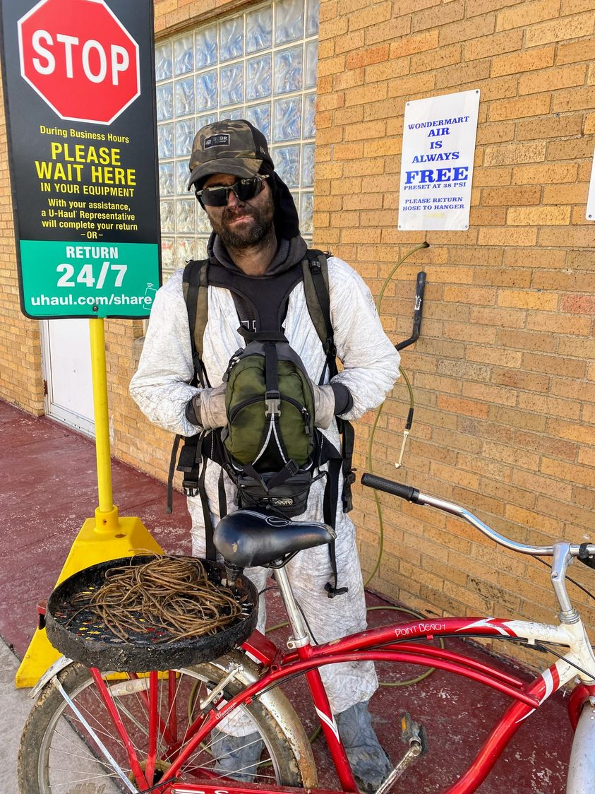

Timeline photos
This is a homeless friend of mine. He's one of the most quick witted people I've ever met. His humor is sharp and clever and nuanced.
He let me take a picture of him here with the copper he collected over night.
I don't ask where people get things. I don't know where he got this copper. But I do know that there are a bunch of abandoned industrial buildings on the east side of Akron that have been sitting vacant for years. There is all kinds of scrap metal in them.
BUT MY POINT FOR SHOWING YOU THIS IS: Homeless people work. And they work really hard. But it has to be on their own terms.
They aren't going to work a 9-5 job. They don't need that much money and that much hassle. They get money for what they need. And what they need isn't much. Usually it's for a pack of cigarettes every few days, a couple hits of meth at $20 a pop or maybe a little bit of pot. And that's it. Everything else is shared and traded. (and really, cigarettes and drugs are shared too.) There is a big shift in money these days with the tap tap machines. I've seen several people quit all drugs so they can spend every penny at the Tap Tap. (Tap machines are like video poker that are barely legal.)
I hear people complain all the time about how homeless people should get a job. But they don't have any solutions for it.
Homeless people need piece work that they can come and do 24/7. And then they get paid for the work when they are done in cash. That's all scrapping is.
If they could make some decent money doing piece work then they'd probably buy more stuff like phones and fast food and phone service. They'd start buying more stuff if they had a steady flow of income.
But as it is, they live extremely minimally. They need so little because they have gotten used to living with so little. And in a way, that makes them a hell of a lot more enlightened than a lot of us wage slaves punching a clock for a job that doesn't pay a living wage.